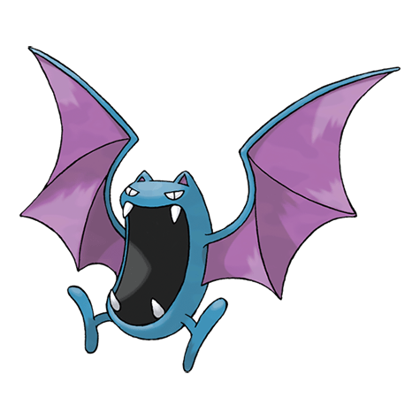

Голбат

Голбат — Покемон 1 поколения под номером 42 в Покедекс. Обитает он в регионе Канто и относится к Ядовитому и Летающему типу. Голбат любит пить кровь живых существ. Он особенно активен в кромешной ночной тьме. Этот Покемон порхает в ночном небе в поисках свежей крови.
Тип и слабости:
Ядовитый
Летающий
Эволюция
# 042 Голбат